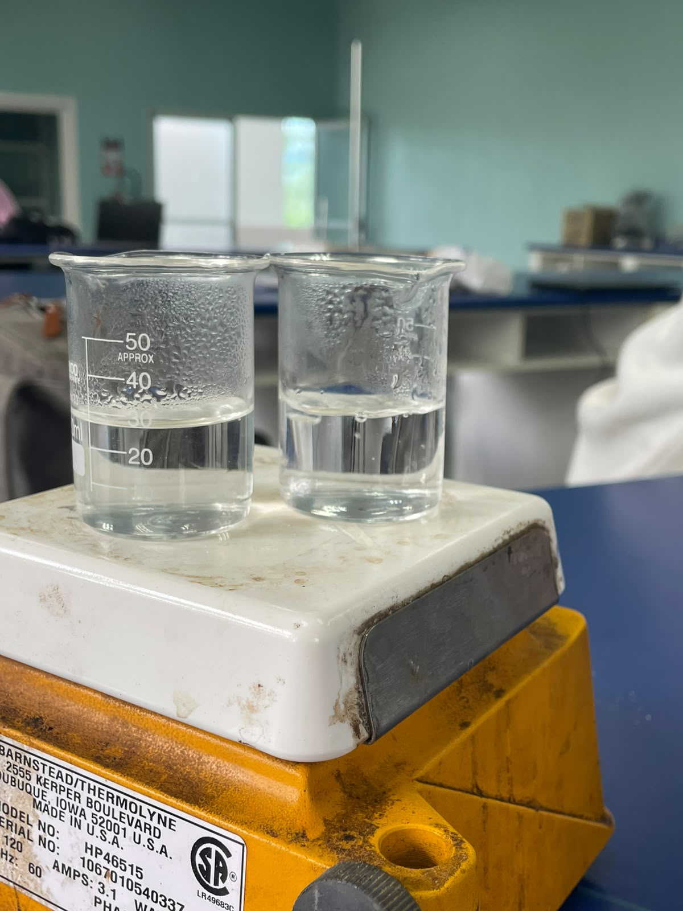
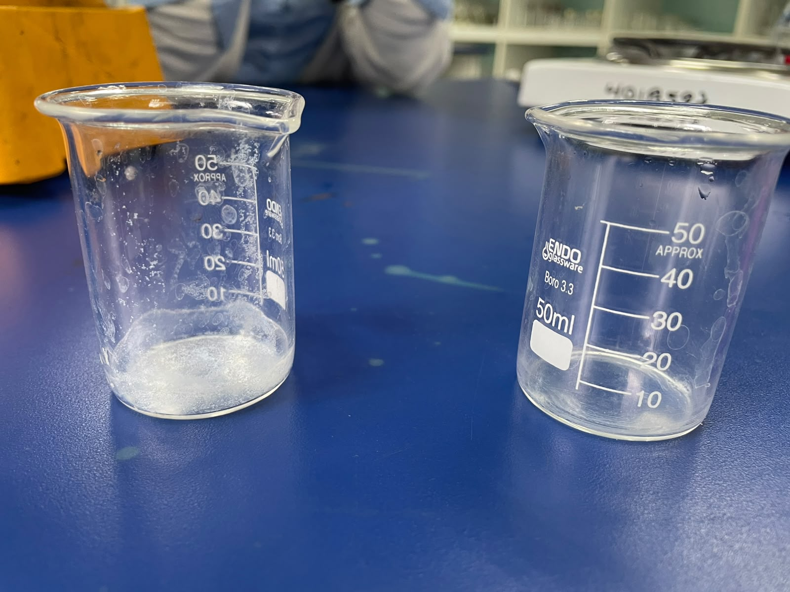
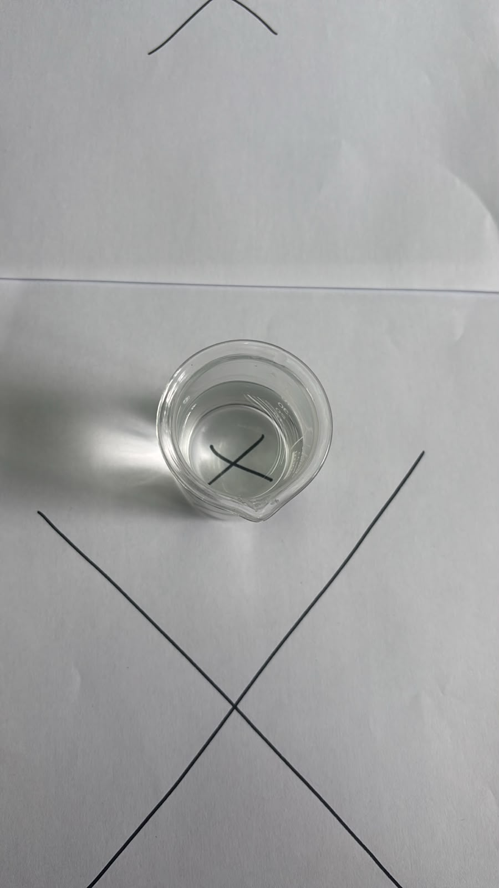
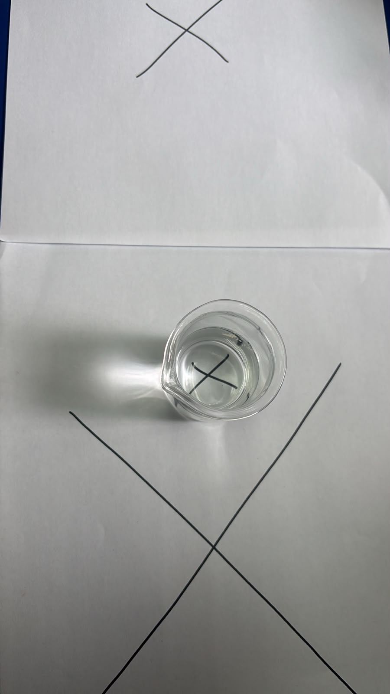

Mecanismo Químico de Incrustación y Hotspots
Explicación del ciclo: El agua dura con iones $Ca^{2+}$ y $Mg^{2+}$ depositada durante el lavado o lluvia se evapora por la radiación solar, dejando cristales de carbonato de calcio ($CaCO_3$). Esta capa opaca bloquea los fotones y genera sombreado focalizado, elevando la temperatura hasta crear un punto caliente (Hotspot) que degrada la celda fotovoltaica.
Ecuación de formación de sarro: Ca²⁺(ac) + 2HCO₃⁻(ac) + calor → CaCO₃(s)↓ + CO₂(g)↑ + H₂O(l)
El Problema de Investigación
Los sistemas de generación de energía solar fotovoltaica instalados en el campus universitario requieren agua para los procesos de limpieza de paneles y mantenimiento preventivo. La calidad del agua empleada en estas operaciones incide directamente en la vida útil de los equipos, ya que la presencia de minerales disueltos, sólidos en suspensión, metales pesados y agentes biológicos puede generar incrustaciones, corrosión y pérdida de eficiencia en la superficie captadora de los módulos fotovoltaicos. Actualmente no existe un protocolo documentado de control fisicoquímico del agua utilizada en el campus.
Pregunta Principal
¿Cuáles son las características fisicoquímicas del agua disponible en el campus universitario y en qué medida estas propiedades representan un riesgo para la eficiencia y durabilidad del sistema de generación solar fotovoltaica?
Metodología Experimental
Recolección de Muestras
Toma de agua de lluvia, agua de grifo del campus y agua purificada comercial (control de referencia), en envases de vidrio previamente lavados con agua destilada.
Medición de pH y Conductividad
Electrodos calibrados (pH-metro con sensor de temperatura y conductímetro portátil), medición directa por inmersión en cada muestra.
Turbidez y Dureza
Comparación visual empírica de turbidez y prueba de evaporación para estimar dureza, ante la falta de reactivos para los métodos instrumentales originales.
Registro y Análisis
Datos tabulados y comparados con los estándares recomendados por la OMS y por los fabricantes de módulos fotovoltaicos.
Nota de Transparencia Metodológica
Por limitaciones de reactivos (EDTA, AgNO₃, K₂CrO₄) y accesorios de laboratorio, algunos métodos se adaptaron a aproximaciones empíricas, documentadas abiertamente como parte del proceso investigativo.
Resultados Fisicoquímicos
Desliza horizontalmente la tabla para ver todos los parámetros analizados:
| Parámetro | Agua de Lluvia | Agua de Grifo | Agua Purificada | Estándar |
|---|---|---|---|---|
| pH | 8.1 (alcalino) | 6.7 (neutro) | 6.2 (lig. ácido) | 6.0 – 8.0 |
| Conductividad | 0.12 mS/cm* | 0.10 mS/cm* | 0.00 mS/cm | < 0.20 mS/cm |
| Temperatura | 24.5 °C | 25.2 °C | 24.7 °C | Ambiental |
| Turbidez | Muy turbia | Poco turbia | Casi nula | < 1 NTU |
| Dureza (residuo) | Mayor residuo de cal | Menor residuo de cal | No evaluada | < 50 mg/L CaCO₃ |
| Cloruros (estim.) | ≈ 43.6 mg/L | ≈ 36.4 mg/L | ≈ 0 mg/L | < 250 mg/L |
* Unidad de conductividad asumida como mS/cm, pendiente de confirmación con el fabricante del equipo. La turbidez y la dureza se determinaron mediante métodos empíricos (comparación visual y evaporación), no instrumentales; los cloruros se estimaron indirectamente a partir de la conductividad.
Conductividad (mS/cm)
pH (rango aceptable 6.0–8.0)
Galería y Evidencia de Campo




Conclusión & Dictamen Técnico
Recomendación de Lavado
La fuente actualmente más adecuada para el mantenimiento del sistema fotovoltaico es el agua purificada o un agua equivalente desmineralizada; el agua de lluvia y el agua de grifo requieren tratamiento previo o una caracterización instrumental más rigurosa antes de recomendarse como fuente de limpieza rutinaria.
Referencias y Bibliografía
- Asociación Americana de Obras Hidráulicas (AWWA). (2017). Water quality & treatment: A handbook on drinking water (6.ª ed.). McGraw-Hill.
- Cui, M., & Bhave, R. R. (2018). Challenges and strategies in developing photovoltaic cleaning systems. Renewable and Sustainable Energy Reviews, 88, 267–282. https://doi.org/10.1016/j.rser.2018.02.043
- Hematiyan, A., & Ameri, M. (2020). Effect of water quality on solar panel surface cleaning. Solar Energy, 198, 44–52. https://doi.org/10.1016/j.solener.2019.12.010
- Organización Mundial de la Salud (OMS). (2017). Guías para la calidad del agua de consumo humano (4.ª ed.).
- Skoog, D. A., Holler, F. J., & Crouch, S. R. (2014). Principios de análisis instrumental (6.ª ed.). Cengage Learning.
Equipo Integrante y Docente
Haga clic o toque la tarjeta para desplegar el listado completo de estudiantes:
Estudiantes Investigadores
Ingeniería en Energía Renovable
Tocar para ver integrantes- Aldany Josué Yanez Mejía
- Daniela Yoselin Rivera Aguilar
- Jessica Yadira García Guerra
- René Zaim Bautista Rodriguez
- Yuly Alejandra Chavez Castillo
- Shirle Yirel Mateo Mendoza
MSc. Cinthia Yamileth Velázques
Asignatura: Química
Universidad Nacional de Ciencias Forestales (UNACIFOR)